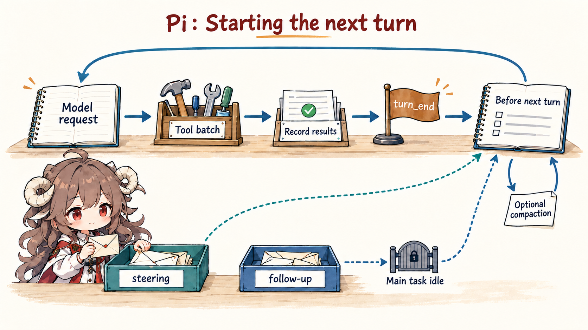
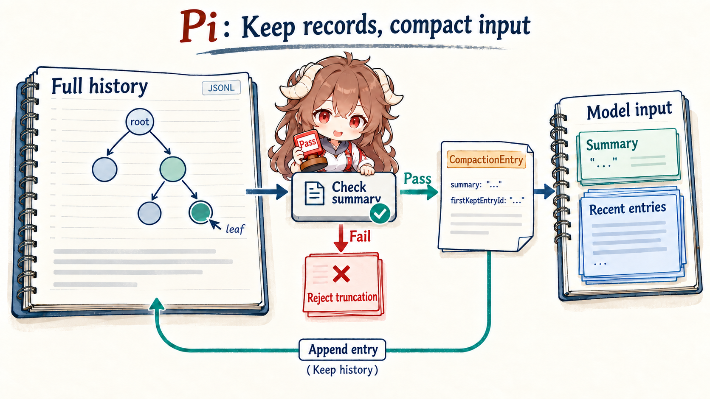

1. Why A Coding Agent Cannot Be One Model Call
Start with a specific task: “make configuration loading asynchronous, then run the tests.” A coding agent may
read files, edit the implementation, execute the test suite, inspect the failure, and revise the patch.
A plain while (tool_call) is already too small a model. Provider output is streaming into the terminal,
tools may finish concurrently, the user may add “do not change the public API” mid-run, and twenty thousand lines
of logs may eventually force context compaction.
Pi calls itself an agent harness, not a prescribed development workflow. Harness is useful here in its mechanical sense: it holds the model, tools, events, and session together while declining to dictate how every team approves commands, plans work, or spawns sub-agents. The harness specifies how the vehicle runs; extensions specify the operating rules for a particular trip.
2. Four Responsibilities The Harness Keeps
- Connect models: normalize provider messages, tool calls, and streaming output.
- Run the loop: execute a proposed tool step, write the result, and decide whether the model continues.
- Report progress: expose text updates, tool start/end, and turn completion as events.
- Keep sessions: persist messages, tool results, branches, and compaction records for recovery.
Approval prompts, MCP, plan mode, and sub-agents matter, but they sit on those four responsibilities. Extensible does not mean empty; Pi fixes the runtime contract that every usage mode must preserve.
3. How The Same Refactor Reaches Completion
- The session assembles the chosen model, file and shell tools, system prompt, and existing history.
- The model requests the config file; the runtime validates and executes the tool, then records the result.
- The model proposes an edit and a test command. Tools may finish concurrently, but results remain paired to calls.
- The user adds “do not change the public API”; that steering message enters before the next model request.
- After a test failure, the model sees the error and repairs the code. Draining tools and steering makes the runtime idle; it does not by itself validate the task.
- A follow-up starts afterward. Under context pressure, the model sees a summary plus recent records.
- The original records remain in the session tree, so the user can branch, recover, or inspect an older path.
These seven steps establish the complete model. runLoop, the JSONL tree, and compaction later identify the
exact source owner and invariant behind each step.
Keep the two “trees” separate.
Pi's session tree preserves conversation records such as messages, tool results, model changes, and summaries.
Git branches or worktrees preserve file versions. Completed edit, bash, and external API
side effects do not roll back when /tree moves to an older leaf. Safe alternative implementations still
need a Git worktree, sandbox, idempotent tools, or an extension-owned approval policy.
Reading contract. This chapter tracks one question: what must Pi's minimal core own, and which policies does it deliberately leave to extensions? By the end, you should be able to replay a request through model calls, tool results, queued input, persistence, branching, and compaction, then explain why the durable ledger is not the model-visible view.
Evidence boundary.
Source links are pinned to public snapshot 34582ef34beec868b0df4fb969385b8af5960c45.
Terms such as harness, durable ledger, and model-visible view are engineering summaries of public ownership boundaries.
Closed provider behavior, third-party extension policy, and sandbox internals remain outside the claims here.
The whole chapter can first be reduced to one shape-level trace:
User: "Make config loading async, then run tests"
-> AgentSession: assemble model, tools, system prompt, resources, SessionManager
-> agent-core: transformContext -> convertToLlm -> provider stream
-> assistant message: text / thinking / toolCall
-> tool batch: validate -> beforeToolCall -> execute -> afterToolCall
-> AgentEvent: message_update / tool_execution_* / turn_end
-> SessionManager: append messages, tool results, and model changes to a JSONL tree
-> next turn: drain steering first; drain follow-up after tools and steering are empty
-> context pressure: append CompactionEntry; model sees summary + recent entries
-> /tree navigation: move leaf; optionally append BranchSummaryEntryThis is not literal TypeScript. It names the handoffs the following sections will make precise. The two important verbs are append and project: the durable session primarily appends records, while each model request projects a context from the current leaf, compaction boundary, and message conversion rules.
| Three views of one session | How it is built | Who consumes it | What may be omitted |
|---|---|---|---|
| Durable ledger | JSONL appends every entry, including old branches, custom entries, and compaction records. | SessionManager, /tree, recovery, and audit. |
Normal context pressure does not require deleting old entries. |
| Active branch | Walk from the current leafId through parentId to the root. |
Session navigation, fork/clone, and context rebuild. | Other branches remain durable but do not belong to the current path. |
| Model-visible view | Apply compaction boundaries, transformContext, and convertToLlm to the active branch. |
The next provider request. | UI-only entries may be filtered and old work may be summarized; tool-call/result pairing must remain valid. |
4. Four Source Layers, Not One Giant Agent Class
4.1 Each layer owns one class of problem
The root README divides Pi into four packages:
pi-ai, pi-agent-core, pi-coding-agent, and pi-tui.
A first-time reader can ignore the package names and ask four questions instead: who normalizes provider messages,
who loops between model and tools, who owns coding-agent files and sessions, and who renders runtime events.
| Layer | What it owns | What it does not decide | First source |
|---|---|---|---|
pi-ai |
Models, providers, content blocks, tool schemas, usage, and streaming assistant events. | It does not select coding tools or persist a session tree. | Provider / Models |
pi-agent-core |
Agent state, turn events, model calls, tool batches, and steering/follow-up queues. | It does not know what a file tool looks like or where sessions live. | Message and event contracts |
pi-coding-agent |
read/bash/edit/write, system prompt, resources, sessions, compaction, extensions, and run modes. | It does not make the TUI the only entry point or bind the product to one provider. | createAgentSession |
pi-tui / modes |
Interactive terminal, print/JSON, RPC, and SDK-facing presentation surfaces. | The interface consumes the runtime; it does not reimplement the loop. | Four entry modes |
This layering yields a useful distinction. Pi's product is a terminal coding agent, but its reusable runtime is not
the terminal. The SDK constructs an AgentSession directly. RPC encodes commands, acknowledgements, and
events as line-delimited JSON. Both reuse the same agent and session path.
The
SDK contract
and
RPC framing
are different shells over that route.
4.2 Minimal does not mean completion adapter
A core that merely forwards text to a model cannot explain why a tool result still matches its originating call, when mid-run user input becomes visible, or how a restarted process resumes the same branch. Pi keeps those responsibilities in core because they determine replayability. Whether every shell command gets a confirmation dialog, or the entire process runs in a container, belongs to the deployment's policy.
Pi's core boundary: keep one agent run coherent across messages, events, tool results, and recoverable records; do not prescribe one workflow or one security interaction for every environment.
5. A Turn Is Not A Completion: Follow runLoop
5.1 The model proposes one step; the runtime owns repetition
Return to the async configuration task. The first model response may request read, the second may contain
edit and bash, and only the third may produce a final answer. The model does not own the whole
while loop. It hands one step back through stopReason and typed content blocks.
The runtime decision can be read in five steps:
- Inject pending steering messages into the current context.
- Call the provider and stream one complete assistant message.
- If it contains tool calls, finish the batch and append tool results.
- Emit
turn_end, then check stop policy, next-turn refresh, and steering. - Only after tools and steering are empty, drain follow-ups; emit
agent_endwhen those are empty too.
These are the inner and outer loops in
runLoop:
the inner loop handles tools and steering, while the outer loop lets an otherwise completed agent accept follow-up work.
agent_end is a runtime state, not a quality verdict.
Suppose the agent edits src/config.ts; the first test exits 1, a repair makes the second exit 0, and the
runtime emits agent_end after draining tools and input queues. That proves only that no action remains in
this run. A diff check must still confirm that the public API is unchanged, then CI or the user must accept the
result before it moves from produced to validated to adopted.

5.2 Tools may finish concurrently while the ledger stays ordered
Suppose one response asks to read two unrelated files. Pi can execute those calls in parallel, but completion order
is not assistant source order. A fast tool may emit tool_execution_end first, while tool-result messages
still enter context in the order the assistant requested them. The UI gets timely progress without destabilizing the
call-result pairing seen by the next model request.
The implementation performs argument validation and beforeToolCall preflight sequentially, runs allowed
calls concurrently, then uses the original array order when emitting result messages. If any target tool declares
executionMode: "sequential", the whole batch uses sequential execution.
See
executeToolCalls.
Live event order
tool A start
tool B start
tool B end
tool A endThis reflects actual progress for the UI.
Model ledger order
assistant: [A, B]
toolResult: A
toolResult: BThis keeps call-result correlation stable.
Output truncation is another important failure boundary. A best-effort JSON parser can sometimes turn incomplete streamed arguments into apparently valid data. When an assistant response stops at the output limit, Pi refuses to execute every tool call from that response and returns explicit errors so the model can issue complete calls. The truncated-call path protects side-effect integrity, not merely parser success.
5.3 Steering and follow-up are different scheduling promises
While tests run, “do not change the public API” is steering. The current assistant turn and its already-issued tool calls finish normally; the new instruction enters before the next model call. “After that, add a changelog entry” is follow-up. It becomes eligible only after the original task has no more tools or steering to process.
This boundary prevents two misreadings. Steering does not erase a running tool, and follow-up does not preempt the
main task. The low-level contract lives in
getSteeringMessages and getFollowUpMessages;
the terminal maps Enter and Alt+Enter onto the two queues.
6. AgentMessage Is Not A Provider Message
6.1 Runtime history may contain records the model should never see
The agent layer uses extensible AgentMessage values. They may be standard user, assistant, and tool-result
messages or application-specific state. Before each provider request, the runtime applies optional
transformContext and required convertToLlm:
AgentMessage[]
-> transformContext() // compact, prune, or inject external context
-> AgentMessage[]
-> convertToLlm() // filter UI-only items, convert custom messages
-> provider Message[]
This boundary is explicit in
streamAssistantResponse.
Presence in the session does not imply presence in the next model request. A plain extension CustomEntry
can persist a counter without entering context; CustomMessageEntry is the explicit model-visible form.
6.2 Provider differences stop in pi-ai
Anthropic, OpenAI Responses, OpenAI-compatible chat, and Google expose different wire shapes, while the loop consumes
one AssistantMessageEventStream. At stream start, a partial assistant message enters context. Text,
thinking, and tool-call deltas replace that partial value. Done or error finalizes it. From the upper layer's view,
changing providers does not change the message_start → message_update → message_end lifecycle.
The value of pi-ai is therefore not just a long model list. It decouples the tool loop from provider
payloads. This adapter boundary becomes a baseline for the general-purpose frameworks later in the series, while Pi
publishes it as a reusable package. A coding-agent extension can also add a provider or override an endpoint through
registerProvider.
7. A Session Is A JSONL Tree, Not A Chat Array
7.1 id + parentId + leaf turns rewind into pointer movement
Linear chat arrays struggle with /tree. If a user rewrites turn ten, should later answers be deleted,
copied to another file, or left mixed into the array? Pi uses an append-only tree. Every entry has id and
parentId; leafId marks the current position. Following parents from leaf to root yields the
active branch.
{"type":"message","id":"m1","parentId":null,"message":{"role":"user","content":"make it async"}}
{"type":"message","id":"m2","parentId":"m1","message":{"role":"assistant","content":[...]}}
{"type":"message","id":"m3","parentId":"m2","message":{"role":"toolResult",...}}
{"type":"message","id":"b1","parentId":"m1","message":{"role":"user","content":"keep a sync compatibility layer"}}
This is a simplified shape, not a full session file. m3 and b1 continue along different
paths without rewriting old records. SessionManager.branch() only moves the leaf to an older entry;
the next append naturally becomes a new child.
Tree construction and branching
make this invariant explicit.
7.2 /tree, /fork, and /clone solve different problems
| Operation | Record change | Best use |
|---|---|---|
/tree |
Stay in one JSONL file, move the leaf, optionally summarize the branch being left. | Try another implementation while preserving both paths. |
/fork |
Copy the selected active path into a new session and return the old user prompt to the editor. | Start an independent experiment from an earlier request. |
/clone |
Copy the current active path into a new session with an empty editor. | Keep current context while splitting future work. |
One /tree detail is easy to reverse. If the user asks to summarize the branch being left,
navigateTree() finds the common ancestor, collects entries from the old path, and generates a summary.
That BranchSummaryEntry is attached at the new navigation position, not after the abandoned leaf.
Future turns on the new path can know what the alternative explored without replaying the entire old branch.
See
navigateTree.
8. Compaction Shrinks Model View, Not Durable History
8.1 Triggering compaction first requires a safe cut
When context usage exceeds contextWindow - reserveTokens, or the user invokes /compact,
Pi prepares compaction. It walks backwards and tries to preserve roughly keepRecentTokens of recent work.
A cut cannot land on a tool result because that would retain a result without the tool call that owns it.
Valid boundaries include user, assistant, bash execution, and custom or branch-summary messages. Tool results are
explicitly invalid. If one turn alone exceeds the recent-token budget, Pi may split inside that turn; it then creates
a separate summary of the early turn prefix and merges it with the history summary.
Defaults and cut logic are visible in
DEFAULT_COMPACTION_SETTINGS
and
findCutPoint.
8.2 Summary generation checkpoints model context
The default path performs four separate operations:
- Convert custom messages to LLM messages, then serialize the conversation as role-labeled text.
- Truncate very large tool results so the summarization request does not overflow itself.
- Require Goal, Constraints, Progress, Decisions, Next Steps, and Critical Context without continuing the conversation.
- Accumulate read/write/edit file paths and append them as structured summary markers.
These responsibilities live in
serializeConversation
and
generateSummary.
The output is not a polished retrospective. It is a textual checkpoint from which another model can continue
reasoning. It restores the model-visible view, not workspace files, background processes, tool-internal state, or
external side effects that have already occurred.
The model call itself has a narrower contract than a normal agent turn:
summary request (shape-level)
system = SUMMARIZATION_SYSTEM_PROMPT
user = <conversation>serialized history</conversation>
+ optional <previous-summary>
+ initial or update summary instructions
tools = none
maxTokens = min(0.8 * reserveTokens, model.maxTokens)
reasoning = forwarded only when the model supports it and thinkingLevel is enabled
summary response
-> stopReason == error: fail without installing compaction
-> join text blocks only
-> runtime appends file markers and creates CompactionEntry
The old conversation is not handed back to the normal agent loop, and the summarization request exposes no tools.
The model produces context-checkpoint text; the compaction runtime still owns firstKeptEntryId, token boundaries,
file markers, and entry installation. “Generate a summary” and “replace part of model view” are separate operations.
8.3 A new entry is appended; a new model view is rebuilt
After summary generation, AgentSession appends
CompactionEntry { summary, firstKeptEntryId, tokensBefore, details } and rebuilds agent state through
buildSessionContext(). Old messages remain in JSONL. The model-visible view becomes the latest summary,
entries from firstKeptEntryId, and records appended after compaction.
durable JSONL:
M1 -> A1 -> T1 -> M2 -> A2 -> T2 -> C1
C1 = {
type: "compaction",
summary: "...",
firstKeptEntryId: "M2",
tokensBefore: 48210
}
next model-visible view:
[compactionSummary(C1), M2, A2, T2]
This differs from replacing an old array with a summary. Direct replacement destroys omitted evidence. Pi's
compaction is a lossy projection, but the durable history remains navigable through /tree.
Persistence and rebuild happen in
AgentSession.compact;
projection rules live in
buildContextEntries.

8.4 Automatic recovery and repeated compaction have separate boundaries
Automatic compaction has threshold and overflow reasons. Threshold is proactive; overflow reacts after a provider
reports that context is too large and may retry the run. Before retry, Pi removes the just-recorded error assistant
message so the error itself does not pollute the reconstructed context. If steering or follow-up messages are waiting,
it continues once after compaction so the queue is not stranded.
_runAutoCompaction
makes that recovery contract visible.
Repeated compaction does not summarize only entries after the old compaction record. Preparation carries the old
summary and starts its next boundary from the prior firstKeptEntryId. The update prompt preserves old
information while incorporating later progress, so messages retained by the previous model view do not disappear
between rounds.
See
prepareCompaction.
9. Extensions Attach To Runtime Gates, Not Just UI
9.1 Why plan mode, sub-agents, and MCP can stay out of core
Pi's README says the default product omits sub-agents and plan mode. Its philosophy section also lists no built-in MCP, permission popups, to-dos, or background bash. This should not be read as “Pi cannot do them.” The more precise claim is that each feature has multiple valid semantics, and core refuses to choose one for every user. The README philosophy turns that negative space into a product constraint.
This works because extensions are not limited to decoration. They can observe provider requests, agent/turn/message
events, tool calls and results, and session compaction or tree navigation. They can register tools, commands,
shortcuts, flags, and providers, or append model-visible custom messages and UI-only persistent entries.
ExtensionAPI
covers nearly the entire path from provider boundary to durable record.
| Capability | Runtime gate | Invariant it must preserve |
|---|---|---|
| Dangerous-command approval | tool_call / beforeToolCall |
A blocked call becomes an explicit tool result rather than vanishing. |
| Custom compaction | session_before_compact |
Summary, first-kept entry, and token boundary still support reconstruction. |
| Plan mode / sub-agent | Custom tool, message, entry, command, and events | Child work returns through agent messages and session records. |
| MCP / remote execution | Registered tools or overridden built-in tool operations | The model still sees a stable tool schema and result contract. |
| New provider | registerProvider / custom stream |
Upper layers still consume unified assistant events. |
9.2 Skills are on-demand instructions; Extensions are executable runtime code
These two mechanisms should not be collapsed. A Skill uses SKILL.md to describe instructions, steps,
and resources. Pi places its name and description into the system prompt and lets the model read the body on demand.
An Extension is TypeScript running inside the Pi process; it can register tools, rewrite events, and persist state.
Skill metadata validation
and
formatSkillsForPrompt
show progressive disclosure; extension code has full process authority.
A third-party Pi Package is therefore not safe merely because it looks like a customization bundle. One package may contain extensions, skills, prompts, and themes; extension code can execute side effects, while skills can direct the model toward them. Source review is the supply-chain cost of an extension-first architecture.
10. Project Trust Is Not A Sandbox
10.1 Loading project resources and approving each tool call are separate gates
Pi now has project trust. When a project contains local settings, extensions, skills, prompts, themes, or system-prompt files, interactive startup asks whether to load them. That prevents a repository from silently running project extensions at startup. It does not restrict what built-in tools can do after a session begins. The official Security document calls project trust an input-loading guard, not a sandbox.
beforeToolCall and the extension tool_call event can block execution, and coding-agent wires
that extension hook into agent-core preflight. The default product still does not ship an AgentScope-style
allow/deny/ask policy. Without a custom gate, read, write, edit, and bash inherit the permissions of the user and
process that launched Pi.
10.2 Real isolation belongs to the process or tool environment
Pi documents three patterns: put the whole process in Docker; put it in a policy-controlled environment such as
OpenShell; or keep Pi and provider credentials on the host while a Gondolin extension routes built-in tools and
! commands into a micro-VM. These patterns isolate different owners. In the third pattern, custom
extension tools still run on the host unless they also delegate their operations.
The
containerization table
makes that boundary explicit.
Do not mistake a pluggable gate for an enabled security policy. Pi exposes interception points, but its default permission boundary remains the operating-system user. Project trust governs resource loading only.
11. Decide With Ownership, Not A Feature Checklist
| Engineering pressure | What Pi core owns | What you still decide | Failure boundary |
|---|---|---|---|
| Multi-provider coding agent | Unified streaming messages, tool calls, usage, thinking, and error contracts. | Model policy, credentials, proxies, and provider extensions. | A custom provider must preserve the stream contract. |
| Long-running tool work | Events, concurrent tool batches, steering/follow-up, abort, and retry hooks. | Which tools may run together and which side effects require approval. | No per-call permission dialog is enabled by default. |
| Recoverable exploration | Append-only JSONL tree, leaf, fork/clone, and branch summary. | When to switch branches and whether to summarize the abandoned path. | Summary is lossy; the raw ledger remains. |
| Context-window pressure | Safe cuts, structured summaries, CompactionEntry, and overflow retry. | Budgets, model choice, and custom summarization policy. | Cutting between a tool call and result is explicitly forbidden. |
| Team-specific workflow | Extensions, Skills, packages, and SDK/RPC embedding surfaces. | Plan, sub-agent, MCP, permission, and sandbox semantics. | Extension code and skills enter the same trust boundary and require review. |
Pi is not Hermes Agent, nor is it a general business framework centered on crews, workflow graphs, or a service control plane. It is first a coding agent harness, with provider, agent-core, and session runtime published as embeddable packages. Its place in this series is the missing coordinate: a framework can be defined by a few stable owners and deep extension gates, not only by adding more built-in features.
The next chapter turns to AgentScope. Pi first fixes the minimal route through providers, the agent loop, tool batches, events, and sessions. AgentScope then asks who owns structured content, permission prompts, pause and resume, external execution, and service sessions when an agent enters a real product. Establishing what core cannot omit makes those added runtime responsibilities visible.